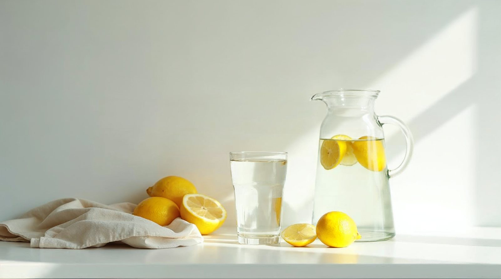
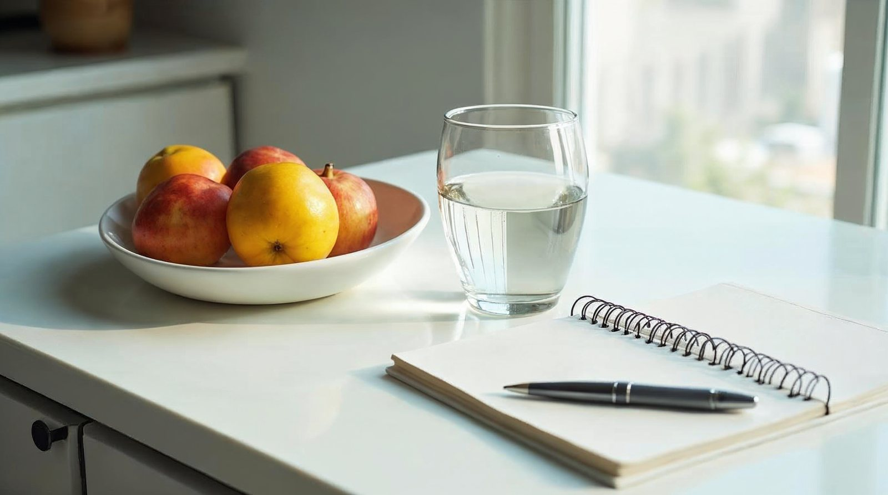
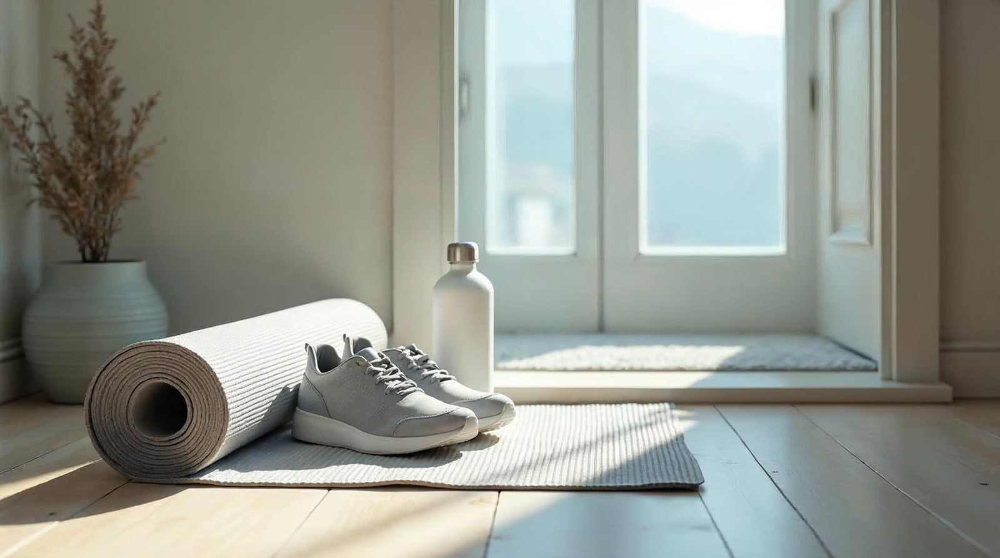
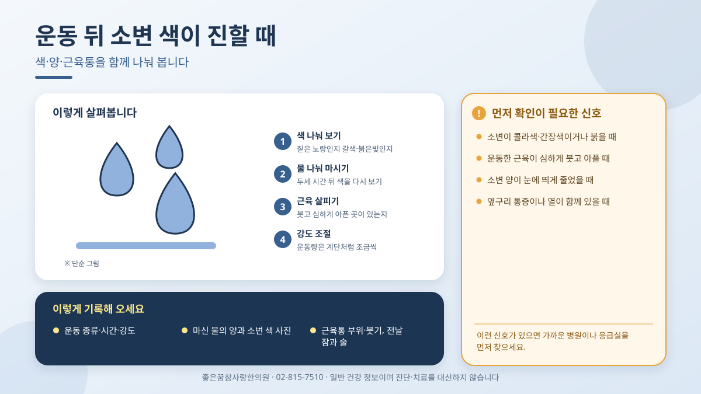

이종호 한의사 감수좋은꿈참사랑한의원 대표원장 (한의사 면허번호 19769)발행 2026-11-26 · 수정 2026-11-26
이 글의 차례
토요일 아침, 오랜만에 친구들과 산을 올랐거나 헬스장에서 평소보다 무게를 더 얹은 날이 있습니다. 땀을 한 바가지 흘리고 개운한 마음으로 샤워를 하고 화장실에 갔는데, 소변 색이 진한 보리차처럼 짙어서 순간 멈칫하게 됩니다. '어디 탈이 난 건 아닐까.'
진료실에서 운동 이야기를 나누다 보면 이 질문을 조심스럽게 꺼내는 분들이 꽤 계십니다. 특히 운동을 막 다시 시작한 남성분들이 많습니다. 비뇨기 쪽 이야기는 꺼내기 쑥스러워 혼자 검색만 하다가, 다른 증상으로 오셨을 때 지나가듯 여쭤보시곤 합니다.
먼저 말씀드리면, 운동 뒤 소변이 진한 노란색인 것은 대부분 몸에 물이 모자라다는 평범한 신호입니다. 물을 마시고 몇 시간 지나면 색이 다시 옅어집니다. 다만 색이 노란 쪽이 아니라 콜라나 간장 같은 갈색, 혹은 붉은빛이라면 이야기가 달라집니다.
그래서 이 글에서는 소변 색을 몇 단계로 나눠 보고, 어떤 경우에는 집에서 물과 휴식으로 지켜보면 되고 어떤 경우에는 병원에서 소변 검사부터 받아야 하는지를 정리해 보려 합니다. 숫자나 검사 이름보다 '내 몸에서 무엇을 보면 되는지'에 초점을 맞추겠습니다.

소변 색은 무엇을 알려 주나요
소변은 콩팥이 피를 걸러 남은 물과 노폐물입니다. 노란빛은 몸속에서 만들어지는 색소 때문인데, 물이 많으면 이 색소가 묽어져 옅은 레몬색이 되고, 물이 모자라면 진해져 짙은 노란색이나 호박색이 됩니다. 그래서 색은 몸의 물 사정을 보여 주는 간단한 창이 됩니다.
편하게 나눠 보면 이렇습니다. 맑거나 옅은 레몬색은 물이 넉넉한 상태, 노란색은 보통, 짙은 노란색이나 호박색은 물이 모자란 쪽입니다. 여기까지는 대부분 물을 마시면 다시 옅어지는 범위입니다.
반면 주황빛이 아니라 갈색, 콜라색, 간장색처럼 어둡게 보이거나 분홍빛, 붉은빛이 돈다면 물 부족만으로 설명하기 어렵습니다. 이때는 소변 안에 피나 근육에서 나온 성분이 섞였는지 확인하는 소변 검사가 먼저입니다.
색이 진해 보이는 데에는 음식과 약도 관여합니다. 비타민 B군 영양제를 드시면 형광빛 노란색이 되기도 하고, 비트나 블루베리를 많이 먹으면 붉은빛이 돌기도 합니다. 일부 약도 소변 색을 바꿀 수 있어, 최근에 새로 드신 것이 있는지 함께 떠올려 보시면 좋습니다.
왜 운동하고 나면 소변 색이 진해질까요
가장 흔한 이유는 땀입니다. 땀으로 물이 빠져나가면 몸은 남은 물을 아끼려고 콩팥에서 소변을 덜 만들고 더 진하게 내보냅니다. 여름 운동이나 실내 사우나 같은 헬스장에서 한 시간 넘게 움직였다면, 생각보다 많은 물이 빠졌을 수 있습니다.
운동 중에 물을 거의 마시지 않은 경우, 전날 술을 마신 경우, 아침을 거르고 공복으로 운동한 경우에도 색이 진해지기 쉽습니다. 커피를 여러 잔 마시고 운동했다면 화장실은 자주 가는데 정작 몸의 물은 모자란 상태가 되기도 합니다.
드물지만 조금 다른 이유도 있습니다. 평소보다 훨씬 강하게, 오래, 반복해서 근육을 쓰면 근육 세포가 상하면서 그 안의 성분이 피로 흘러나옵니다. 이 성분이 많아지면 소변이 콜라색을 띠고, 콩팥에 부담을 줄 수 있습니다. 이를 횡문근융해증이라고 부릅니다.
또 장거리 달리기나 격한 운동 뒤에 방광 벽이 부딪히거나 콩팥으로 가는 피 흐름이 잠시 달라지면서 소변에 약간의 피가 섞이는 경우도 있습니다. 대개 하루 이틀 쉬면 사라지지만, 피가 보였다면 다른 원인이 없는지 소변 검사로 확인해 두는 것이 안전합니다.
물 부족과 근육 손상은 어떻게 다른가요
물이 모자란 경우는 대개 입이 마르고, 소변 양이 줄고, 색이 짙은 노란색입니다. 근육은 기분 좋게 뻐근한 정도이고, 물을 한두 컵 마시고 쉬면 몇 시간 안에 색이 옅어지고 소변 양도 돌아옵니다.
근육 손상이 심한 경우는 다릅니다. 소변 색이 노란색이 아니라 갈색이나 콜라색에 가깝고, 운동한 근육이 손으로 누르기 어려울 만큼 아프고 단단하게 붓습니다. 팔을 들거나 계단을 내려가기 힘들 정도이고, 물을 마셔도 색이 잘 옅어지지 않습니다.
흔히 겪는 지연성 근육통은 운동 다음 날이나 이틀째에 쑤시는 정도로, 움직이다 보면 조금씩 풀리고 소변 색은 그대로입니다. 근육통과 소변 색을 따로 떼어 보지 말고 함께 보시는 것이 구분하는 데 가장 쓸모가 있습니다.
헷갈릴 때는 물을 한두 컵 나눠 마시고 두세 시간 뒤 다음 소변 색을 다시 보세요. 옅어졌다면 물 부족 쪽일 가능성이 크고, 그대로 어둡거나 오히려 짙어졌다면 쉬면서 기다리기보다 소변 검사를 받아 보시는 쪽이 안전합니다. 이 간단한 비교만으로도 다음 걸음을 정하기가 한결 쉬워집니다.
어떤 운동에서 더 자주 생기나요
평소 운동을 거의 하지 않다가 갑자기 고강도 운동을 몰아서 한 경우가 가장 흔합니다. 오랜만에 간 단체 운동 수업에서 남들 속도를 따라가려 무리하거나, 턱걸이·스쿼트 같은 동작을 정해진 개수만큼 반복하는 수업에서 자주 이야기가 나옵니다.
내려가는 동작이 많은 운동도 근육에 부담이 큽니다. 산을 내려올 때, 계단을 오래 내려갈 때, 무게를 천천히 내리는 동작을 반복할 때 근육은 늘어나면서 힘을 쓰게 되고, 이런 움직임이 근육을 더 지치게 합니다.
더운 날 야외 운동, 땀복을 입고 하는 운동, 체중을 빨리 줄이려고 물을 제한하며 하는 운동은 물 부족과 근육 부담이 겹치기 쉽습니다. 감기 기운이 있거나 잠을 설친 날 무리해서 운동하는 것도 몸이 버티는 힘을 떨어뜨립니다.
소변 줄기나 통증이 함께 있다면
운동 뒤 소변 색과 함께 소변 볼 때 따끔거림, 아랫배 묵직함, 자주 마려운 느낌이 있다면 방광이나 요도의 염증 여부도 함께 봐야 합니다. 땀을 많이 흘려 소변이 진해지면 방광이 더 예민하게 느껴질 수는 있지만, 통증이 이어진다면 소변 검사가 먼저입니다.
중년 이후 남성분이라면 소변 줄기가 약해지거나 잔뇨감이 함께 있는지도 여쭙니다. 이런 증상은 운동과 별개로 전립선 쪽 변화와 관련이 있을 수 있어, 비뇨의학과에서 한 번 확인해 두시길 권합니다. 한의원 진료는 그 확인과 나란히 갈 수 있습니다.
옆구리 한쪽이 찌르듯 아프면서 소변에 피가 비친다면 요로 결석처럼 다른 원인을 먼저 떠올려야 합니다. 운동 때문이겠거니 하고 넘기기보다, 통증 위치와 색을 적어 두고 진료를 받으시는 편이 마음도 편합니다.
먼저 이렇게 여쭙니다
운동 뒤 소변 색이 걱정되어 오시면 대략 이런 순서로 여쭙니다. 미리 떠올려 오시면 이야기가 훨씬 빨라집니다.
- 어떤 운동을 얼마나 오래, 평소보다 얼마나 세게 하셨나요?
- 운동 전후와 도중에 물은 대략 얼마나 드셨나요?
- 소변 색이 노란색에 가까운가요, 갈색이나 붉은빛에 가까운가요?
- 소변 양과 횟수가 평소보다 줄었나요?
- 운동한 근육이 붓거나 누르면 심하게 아픈 곳이 있나요?
- 최근 새로 드신 약이나 영양제, 전날 술자리가 있었나요?
모든 질문에 정확히 답하지 못하셔도 괜찮습니다. 소변 사진 한 장과 그날 운동 내용만 있어도 어느 쪽인지 가늠하는 데 큰 도움이 됩니다.
평소 체질도 함께 여쭙니다. 땀이 유난히 많은지, 더위를 잘 타는지, 입이 자주 마르는지, 소화가 약해 물을 한꺼번에 마시기 어려운지 같은 이야기입니다. 같은 운동을 해도 몸마다 물이 빠지는 속도와 채우는 방식이 달라서, 이런 이야기가 생활 안내를 정하는 데 실마리가 됩니다.

일상에서 먼저 해 볼 수 있는 것
색이 짙은 노란색이고 근육통이 심하지 않다면, 먼저 물과 휴식으로 지켜보셔도 됩니다. 한꺼번에 많이 마시기보다 나눠 마시는 것이 몸에 편합니다.
- 운동 1~2시간 전에 물 한두 컵을 미리 마시기
- 운동 중에는 15~20분마다 몇 모금씩 나눠 마시기
- 운동 뒤에는 소변 색이 옅어질 때까지 조금씩 이어 마시기
- 땀을 많이 흘린 날에는 식사로 염분과 과일을 함께 챙기기
- 운동 전날 과음을 피하고, 공복 고강도 운동은 줄이기
- 소변 색을 한 번씩 보고 옅은 노란색을 기준으로 삼기
물을 얼마나 마셔야 하는지는 몸무게와 땀의 양에 따라 다릅니다. 숫자보다 소변 색을 기준으로 삼는 것이 실용적입니다. 다만 짧은 시간에 지나치게 많은 물을 들이켜는 것도 몸에 무리가 될 수 있으니, 갈증이 가라앉을 만큼 나눠 마시면 충분합니다.
운동 강도는 계단처럼 올리시길 권합니다. 오랜만에 운동을 다시 시작한다면 첫 2주는 숨이 약간 차되 이야기할 수 있는 정도로 하고, 무게나 개수는 일주일에 조금씩만 늘리세요. 단체 수업이라면 첫날은 다른 사람 속도보다 내 몸을 기준으로 삼는 것이 좋습니다.
운동 뒤에는 바로 앉거나 눕기보다 5~10분 천천히 걸으며 숨을 고르고, 땀이 식기 전에 옷을 갈아입어 몸이 갑자기 차가워지지 않게 합니다. 그날 저녁에는 미지근한 물로 샤워하고 평소보다 조금 일찍 잠자리에 들어 몸이 회복할 시간을 주세요.
근육이 뻐근한 다음 날에는 같은 부위를 다시 세게 쓰기보다 가볍게 걷거나 다른 부위를 움직여 주세요. 아픈 근육을 억지로 세게 주무르거나 사우나에서 오래 땀을 빼는 것은 물 부족을 더할 수 있어, 회복기에는 피하시는 편이 좋습니다.
한의원에서 함께 살필 수 있는 경우
- 소변 검사 등으로 다른 원인을 확인한 뒤 운동 후 피로와 근육 뭉침이 오래가는 경우
- 땀을 유난히 많이 흘리고 운동 뒤 기운이 쭉 빠지는 경우
- 입이 자주 마르고 물을 마셔도 갈증이 쉽게 가시지 않는 경우
- 운동만 하면 다음 날 목, 어깨, 허리, 허벅지가 오래 뻐근한 경우
- 운동을 다시 시작하고 싶은데 어디서부터 강도를 정할지 막막한 경우
좋은꿈참사랑한의원에 오시면 먼저 아래 '먼저 확인이 필요한' 신호가 없는지부터 봅니다. 소변 색이 갈색이나 붉은빛이었다면 소변 검사를 받으셨는지, 결과가 어땠는지를 먼저 여쭙고, 아직이라면 내과나 비뇨의학과를 먼저 안내합니다.
다른 원인이 없다고 확인되면 맥을 짚고 땀, 잠, 소화, 대소변의 흐름을 함께 봅니다. 뭉친 근육이 있다면 직접 만져 보며 자리를 확인하고, 진찰한 내용을 바탕으로 침, 물리치료, 한약 상담 가운데 지금 상태에 맞는 것을 정합니다.
한약을 상의할 때는 지금 드시는 약과 영양제를 모두 확인하고 신중하게 정합니다. 다른 병원에서 처방받은 약은 상의 없이 멈추지 않습니다. 운동 강도와 물 마시는 습관처럼 생활에서 바꿔 볼 것 하나를 함께 정해, 다음 운동 때 몸이 어떻게 달라지는지 지켜봅니다.
이렇게 기록해 오시면 상담이 쉬워집니다
운동과 소변 색은 하루치 기억보다 며칠의 기록이 더 많은 것을 알려 줍니다. 1~2주 정도 간단히 적어 보세요.
- 운동 종류, 시간, 평소 대비 강도
- 운동 전후와 도중에 마신 물의 양
- 운동 뒤 첫 소변의 색(가능하면 사진)과 옅어지기까지 걸린 시간
- 근육통이 생긴 부위와 정도, 붓기 여부
- 전날 잠, 술, 식사 여부
기록을 나란히 놓고 보면, 물을 적게 마신 날이나 무리한 날에만 색이 진해지는지, 아니면 운동과 상관없이 색이 바뀌는지가 보이기 시작합니다. 그 차이가 다음 걸음을 정하는 실마리가 됩니다.

운동을 오래 즐기기 위해
운동 뒤 소변 색이 진한 것은 대부분 몸이 '물 좀 채워 달라'고 보내는 작은 신호입니다. 그 신호를 알아채고 물과 휴식으로 답해 주면 충분한 경우가 많습니다. 다만 색이 노란색을 벗어났다면, 그때는 망설이지 말고 확인을 먼저 하시는 것이 좋습니다.
이번 주 운동에서는 운동 전에 물 한 컵, 운동 뒤 첫 소변 색 한 번 보기, 이 두 가지만 해 보세요. 다음에 오시면 그 기록부터 함께 펼쳐 보겠습니다.
이런 증상은 먼저 확인이 필요합니다
- 소변이 콜라색·간장색이거나 붉고, 운동한 근육이 심하게 붓고 아픈 경우
- 소변 양이 눈에 띄게 줄거나 거의 나오지 않고, 옆구리 통증이나 열이 함께 있는 경우
이런 신호가 있으면 한의원보다 가까운 병원이나 응급실을 먼저 찾으세요.
함께 읽으면 좋은 글
- 운동하고 이틀째에 더 쑤시는 지연성 근육통은 왜 생기고, 회복은 어떻게 살피나요?
- 마라톤이나 장거리 달리기를 마친 뒤, 며칠 동안 몸 회복은 어떻게 살피나요?
- 여름에 더위를 먹은 듯 기운이 없고 어지러울 때는 무엇을 살피고 어떻게 지내나요?
- 옆구리가 결리고 아플 때 근육·갈비뼈·콩팥·피부 가운데 어디서 오는지 어떻게 나눠 살피나요?
- 물을 마셔도 갈증이 계속될 때는 어떻게 하나요?

여쭙는 것
- 어떤 운동을 얼마나 오래, 평소보다 얼마나 세게 하셨나요?
- 운동 전후와 도중에 물은 대략 얼마나 드셨나요?
- 소변 색이 노란색에 가까운가요, 갈색이나 붉은빛에 가까운가요?
생활에서 해 볼 것
- 운동 1~2시간 전에 물 한두 컵을 미리 마시기
- 운동 중에는 15~20분마다 몇 모금씩 나눠 마시기
- 운동 뒤에는 소변 색이 옅어질 때까지 조금씩 이어 마시기
한의원에서 함께 살필 것
- 소변 검사 등으로 다른 원인을 확인한 뒤 운동 후 피로와 근육 뭉침이 오래가는 경우
- 땀을 유난히 많이 흘리고 운동 뒤 기운이 쭉 빠지는 경우
- 입이 자주 마르고 물을 마셔도 갈증이 쉽게 가시지 않는 경우
먼저 확인이 필요한 신호
- 소변이 콜라색·간장색이거나 붉고, 운동한 근육이 심하게 붓고 아픈 경우
- 소변 양이 눈에 띄게 줄거나 거의 나오지 않고, 옆구리 통증이나 열이 함께 있는 경우
한눈에 보는 표
| 구분 | 핵심 |
|---|---|
| 여쭙는 것 | 어떤 운동을 얼마나 오래, 평소보다 얼마나 세게 하셨나요? 운동 전후와 도중에 물은 대략 얼마나 드셨나요? |
| 생활에서 해 볼 것 | 운동 1~2시간 전에 물 한두 컵을 미리 마시기 운동 중에는 15~20분마다 몇 모금씩 나눠 마시기 |
| 한의원에서 함께 살필 것 | 소변 검사 등으로 다른 원인을 확인한 뒤 운동 후 피로와 근육 뭉침이 오래가는 경우 땀을 유난히 많이 흘리고 운동 뒤 기운이 쭉 빠지는 경우 |
| 먼저 확인이 필요한 신호 | 소변이 콜라색·간장색이거나 붉고, 운동한 근육이 심하게 붓고 아픈 경우 소변 양이 눈에 띄게 줄거나 거의 나오지 않고, 옆구리 통증이나 열이 함께 있는 경우 |
자주 묻는 질문
운동 뒤 소변이 진한 노란색이면 병원에 가야 하나요?
대개는 물이 모자란 신호라 물을 나눠 마시고 쉬면 몇 시간 안에 옅어집니다. 물을 마셔도 하루 넘게 진하거나 갈색·붉은빛이 돈다면 소변 검사를 받아 보시길 권합니다.
소변 색이 콜라색이었는데 지금은 괜찮아졌습니다. 그래도 확인해야 하나요?
근육 손상이나 소변 속 피 여부는 겉보기만으로 알기 어렵습니다. 색이 돌아왔더라도 한 번은 내과나 비뇨의학과에서 소변 검사를 받아 두시면 마음이 편합니다.
단백질 보충제를 먹으면 소변 색이 진해지나요?
보충제 자체보다 물을 적게 마시면서 보충제를 함께 드시는 경우 소변이 진해지기 쉽습니다. 보충제를 드신다면 평소보다 물을 조금 더 챙기시고, 드시는 제품은 진료 때 알려 주세요.
운동 뒤 근육통이 있을 때 침 치료를 받아도 되나요?
소변 색이나 붓기처럼 먼저 확인할 신호가 없는지 본 뒤 진찰해서 정합니다. 갈색 소변이 있었다면 검사 결과를 먼저 확인하고, 이후 뭉친 근육과 회복 상태를 함께 살핍니다.
운동을 쉬어야 하나요, 계속해도 되나요?
소변 색이 옅어지고 근육통이 가벼우면 강도를 낮춰 이어 가셔도 됩니다. 갈색 소변이나 심한 붓기가 있었다면 검사로 확인한 뒤, 진료한 선생님과 상의해 다시 시작할 시점을 정하세요.
좋은꿈참사랑한의원은 재진 때 지난번 이야기부터 이어서 여쭙니다. 진료시간과 예약은 오시는 길에서 확인하세요.
어디서 상담받을 수 있나요?
좋은꿈참사랑한의원은 서울 동작구 만양로2길 2 신성빌딩 3층·5층(서울 동작구 상도동, 7호선 상도역 3번 출구 근처)에 있습니다. 한의사 3명(이종호 대표원장, 조영기 수석진료원장, 정원영 진료원장)이 진료합니다. 진료시간은 평일 09:30~20:00(점심 13:00~14:00), 토·일·공휴일 09:30~15:00이며, 방문 전 전화로 확인을 권합니다. 예약은 네이버 예약, 카카오톡 상담, 전화 02-815-7510로 받습니다.
이 글은 일반적인 건강 정보이며 개인의 진단이나 치료를 대신하지 않습니다. 증상이 있거나 복용 중인 약이 있다면 진료를 통해 확인하세요. 치료 효과는 개인마다 다를 수 있습니다.
작성 기준: 일반적으로 알려져 있는 건강 정보를 참고해 정리했습니다(대표원장 감수). 증상 기록은 1~2주 동안 하루 1회, 비슷한 시간에 적어 오시면 지난 상태와 비교하기 쉽습니다.